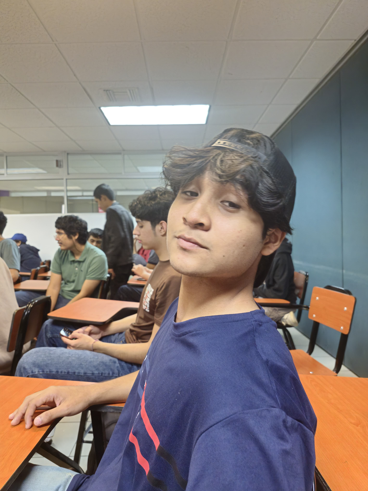
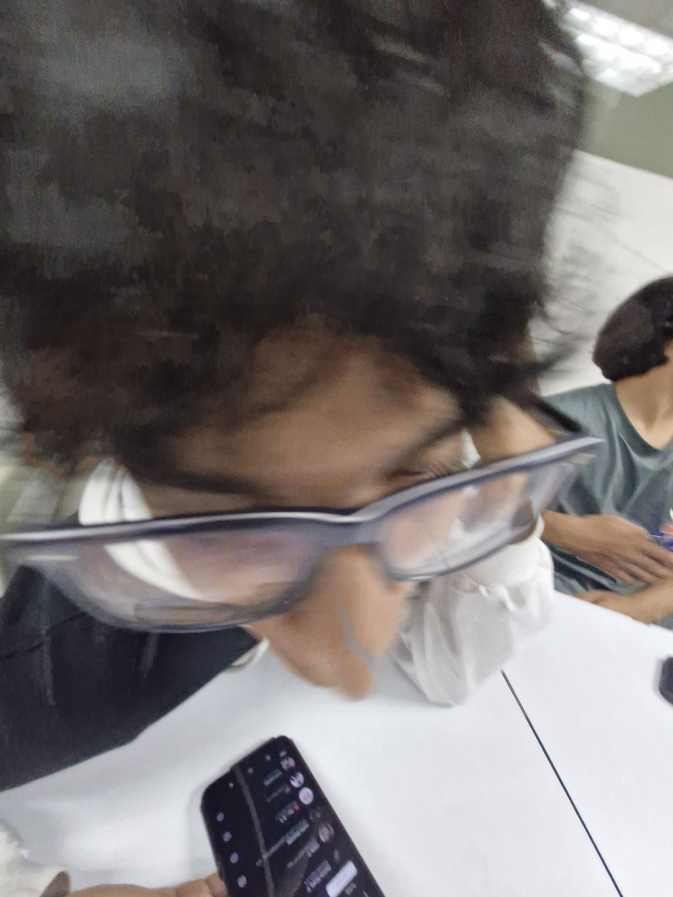
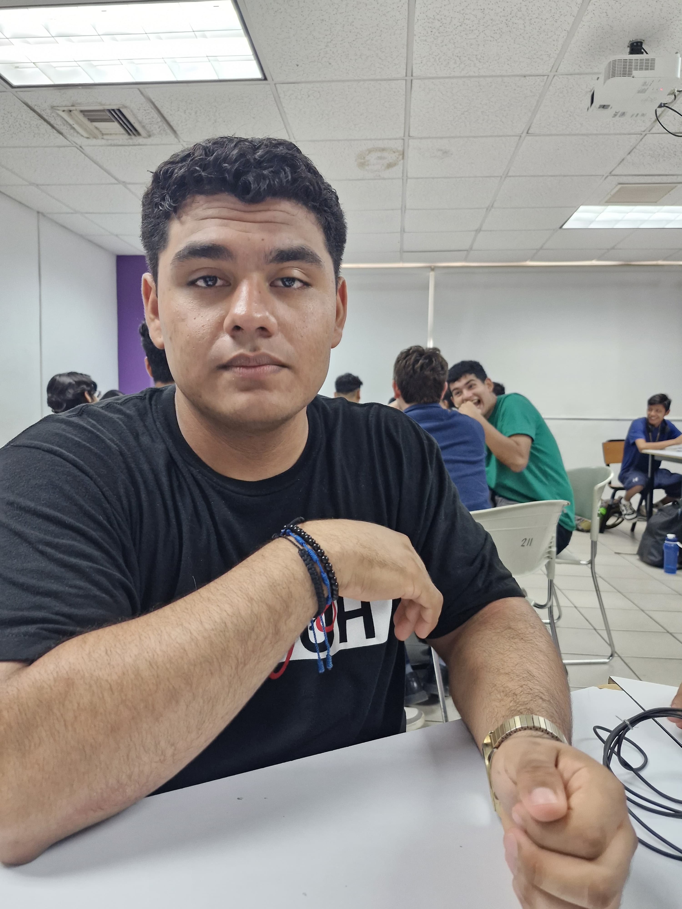

CALCULADORA
Vectores
Vista
Friccion
Torsion
Torsion Resultante
Rapidez y velocidad
Aceleracion
Gravedad
Proyeccion Horizontal
Equilibrio
Creditos
Universidad Politecnica de Victoria
Profesor: Arturo Guadalupe Mascorro Cienfuegos
Carrera: Ingenieria en Teconologias de la Informacion Digital
Proyecto: Calculadora de Fisica
Materia: Fisica
Integrantes:
Ricardo Maximiliano Trejo Tobias
levely
Mauricio Garcia Cervantes

kirito
Bernardo Damian Rivera Fernandez

eaglebdc
Carlos Guillermo Moncada Ortiz
laxtrax
Jose Oswaldo Tienda Mendoza

lolomar